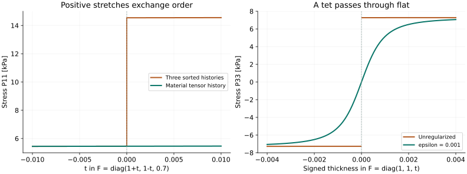

SVD can remove the rotation artifact.
The history representation matters.
Rendered derivation: hydrostatic term, 9 + 1 rows, and SVD/stretch constraints
The promising candidate stores a symmetric stretch-history matrix in material coordinates. SVD computes the stretch, while the history remains attached to the material through rotations and changes in the ordering of principal stretches.
Exploration onlyFloat64 reference checksWarp CPU + CUDA probesSolver unchanged1. What should the history remember?
| Representation | Rigid rotation with retained history | Equal / crossing positive stretches |
|---|---|---|
Current full matrix: history of F | Old spatial stress can produce artificial forces. | No singular-value labels, but rotation is already a problem. |
| Three scalar histories in sorted SVD slots | Fixes the rotated-rest example when all three histories agree. | Unequal histories can swap physical directions and make stress jump. |
Symmetric material matrix: history of S | Force rotates with the material; rest remains balanced. | The complete tensor is independent of the arbitrary SVD basis. |
In the three-scalar version, slot 1 means “the largest stretch now.” When the x and y stretches exchange order, slot 1 changes direction. If it carries a larger stored stress, that stress changes direction too. This is a force issue, not just a Hessian issue. Tracking directions instead of sorting can postpone this swap, but equal stretches still require a choice about directional history.
mat33 allocation can hold it during the experiment.2. What the probes actually show
The following are constitutive calculations with frozen history, using mu = 10,000 Pa and rho = 1,000 Pa. They are not an integrated simulation or a speed comparison.

Left: scalar history is mu × [1.5, 0.5, 0.4]; tensor history is mu × diag(0.5, 1.5, 0.4), matching the initial material directions. Right: retained tensor history is mu × diag(1, 1, 0.8). Download the figure.
{kind=link}
| Check | Observed result |
|---|---|
| Rotate rest by 0.2 rad without reseeding | Total stress norm: current matrix ≈ 2,567 Pa; stretch tensor ≈ 1.9 × 10−12 Pa. |
| Crossing interval shrinks from ±0.01 to ±10−8 | Sorted stress difference approaches 12,856 Pa. Tensor difference shrinks from 25.7 Pa to 0.0000257 Pa. |
| Energy gradient / exact vertex Hessian versus finite differences | Relative errors ≈ 1.2 × 10−9 / 1.1 × 10−9 in the tested full-rank configuration. |
| Rotate a deformed tet with fixed material history | Stress covariance error ≈ 5.1 × 10−16; spatial stress remains symmetric. |
| Change the arbitrary basis of a repeated stretch | Ten basis changes leave stress unchanged to about 10−15 relative error. |
| Seed equilibrium history at positive, flat and inverted poses | Regularized mu stress equals mu * F to float64 rounding in the tested cases. |
These use a different fixed rho from the earlier whole-solver rotation diagnostic. Stress norms here cannot be read as the earlier vertex-displacement measurement. Raw constitutive results.
3. The proposed formula, without LaTeX
F maps a tet’s rest geometry to its current geometry. S describes stretch in the original material coordinates. A rigid rotation changes F but leaves S unchanged. Lambda is the stored symmetric stress-like multiplier.
S = sqrt(transpose(F) * F + epsilon² * I)
s = mu / (mu + rho)
k_eff = mu * rho / (mu + rho)
Seed: Lambda = mu * S
After each full sweep: Lambda = k_eff * S + s * LambdaKeep epsilon fixed. The probe uses epsilon = 0.001 for flattening; that is a diagnostic value, not a tuned solver default. Positive epsilon makes the derivative defined at flat and inverted states. The ALM row uses S itself, not S − I, to preserve the existing mu energy and its cancellation with resting pressure.
How SVD supplies S
U, sigma, V = svd(F)
r_i = sqrt(sigma_i² + epsilon²)
S = V * diag(r) * transpose(V)The exact force must differentiate this stretch. Simply rotating the matrix multiplier back is generally wrong when its directions differ from the current stretch directions.
# X is a temporary symmetric 3×3 matrix, computed locally per tet.
S * X + X * S = Lambda
# This is just entrywise division in the current SVD basis:
Lhat = transpose(V) * Lambda * V
Xhat[i,j] = Lhat[i,j] / (r_i + r_j)
X = V * Xhat * transpose(V)
P_mu = k_eff * F + 2 * s * F * XThere is no global solve here. Equal positive stretches cause no division by a zero difference: the denominators are sums. The standard stretch differential has this Sylvester-equation structure; the ALM stress above is our derivation using it. Bisson & Pennec, differential of the stretch tensor.
Why the original material law is preserved
At an ALM fixed point:
Lambda = mu * S
X = (mu / 2) * I
P_mu = (k_eff + s * mu) * F = mu * F
Also:
||S||² = ||F||² + 3 * epsilon²Thus the target mu energy changes only by a constant. This remains true through inversion when epsilon is positive. The complete stable Neo-Hookean stress is recovered when the existing pressure ALM row also reaches its fixed point. This establishes consistency of the fixed point, not a convergence guarantee.
4. Smooth force still needs a suitable local Hessian
The retained tensor makes the temporary energy depend on direction. Even with positive material stiffness and positive-definite history, its frozen-history Hessian can be indefinite. The exact Hessian therefore differs from the current full-matrix mode’s simple k_eff * I.
Exact derivative and the vertex block
For a trial deformation change A, compute two more local Sylvester solves using the same SVD:
S * dS + dS * S = transpose(F) * A + transpose(A) * F
S * dX + dX * S = -(dS * X + X * dS)
dP_mu = k_eff * A + 2 * s * (A * X + F * dX)
# For vertex displacement direction u and inverse-rest weight w:
A = u * transpose(w)
H_vertex * u = rest_volume * dP_mu * wUse three basis directions to form the symmetric 3×3 block. Add the existing pressure block, inertia and other terms. A prototype can floor negative/small eigenvalues of this assembled local block to obtain a descent direction. It still needs finite-iteration stability testing; SPD alone does not guarantee that a full VBD step decreases the objective.
F = diag(1,1,0), the probe’s dP33/dF33 is about 7.27 MPa with epsilon = 0.001. This is a constitutive tangent, not a particle stiffness. Regularization removes the discontinuity, but retained stress divided by a small epsilon can still create a stiff local problem.A cheap positive-definite upper bound is available, but at equilibrium it recovers the original mu stiffness. Using that bound everywhere would discard much of the softening we wanted from ALM. I favor testing the exact local block with correction only where needed.
The exact derivative contains cancellation of large terms near small stretches. Start with float64 intermediate calculations as a reference; assess a cancellation-resistant float32 formula before treating performance or robustness as settled.
5. How this fits the current code
| Part | Proposed change |
|---|---|
| Persistent state | Reuse tet_lambda_mu: mat33, but give it material-stretch semantics in a separate experimental mode. Six independent values; symmetry must be retained. Existing full-mode allocation stays 52 bytes per tet if mat33 is reused. |
| Prepare | Compute incoming S, seed pending history with mu*S. A positive scalar rho is sufficient for consistency; initially hold the policy fixed for a controlled comparison, then assess stretch-based metric scaling. |
| Primal evaluation | Compute current SVD inside the shared tet evaluator; use the exact stress and local block. Both scalar and tiled paths call it. Do not cache one decomposition across all colors, because geometry changes. |
| Dual update / reset | Update Lambda from S after the full sweep; preserve the current pending/reseed and selected-world reset lifecycle. A mode change must invalidate old F-history. |
| Scheduling | No new coloring and no global solve. Buffers and launch counts can remain fixed for capture. |
Inline evaluation costs up to four SVDs per active tet per full color sweep, plus one for the tet dual update and preparation work. This follows from the current four-vertex visitation pattern. Whether the reduced iteration count pays for that work needs an integrated benchmark.
What was verified in Warp
On installed Warp 1.17.0, a standalone SVD kernel ran on CPU and a claimed L40 GPU. Three warmed CUDA graph replays matched eager output bitwise for float32 and float64. This verifies capture of the primitive, not the proposed ALM solver.
Warp may return a signed final singular value for inverted F. The proposed sqrt(sigma² + epsilon²) handles that convention. Its float32 implementation uses four Jacobi sweeps and an absolute QR tolerance; float64 uses eight sweeps. NVIDIA Warp 1.17 SVD implementation.
Across 1,000 sampled random matrices, GPU float32 reconstruction error had median 3.1 × 10−7 and maximum 3.78 × 10−4; float64 maximum was about 5 × 10−15. Uniformly tiny input also exposes the absolute tolerance. These are decomposition errors, not measured force errors. Scaling and precision need testing before integration.
Next implementation experiment: a separate stretch-tensor mode, fixed epsilon, exact local derivatives with float64 reference checks, and correction of the assembled 3×3 block when needed. Compare true material residual at equal GPU time against pressure-only ALM, including continuous rotation, shear, stretch crossings and flattening. Keep contact work separate.
6. Reproduce or inspect the exploration
All files are under notes/svd-exploration/ in the isolated alm-dat-design worktree. These are exploratory references and diagnostics; no production solver code changed.
uv run --no-sync python notes/svd-exploration/numpy_probe.py
uv run --no-sync python notes/svd-exploration/build_report.py
# CPU:
uv run --no-sync python notes/svd-exploration/warp_probe.py --device cpu
# After the workspace GPU-claim step:
uv run --no-sync python notes/svd-exploration/warp_probe.py --device cuda --capture